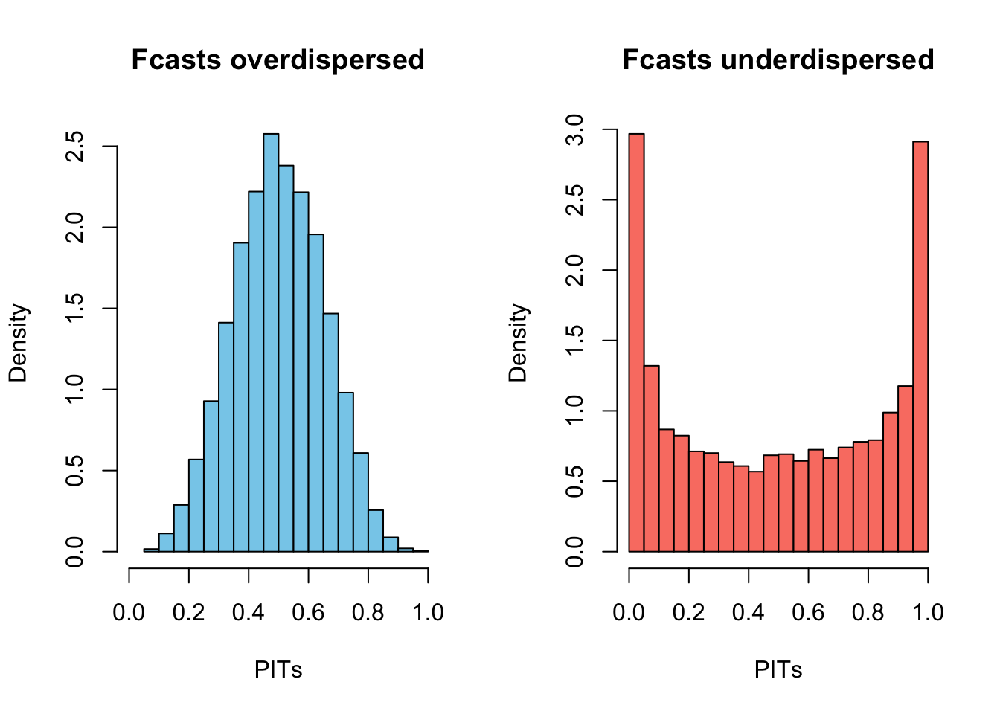

How do you evaluate probabilistic predictions?
Lecture 4
John Zito
Duke University
STA 542 Fall 2025
Recap: probabilistic prediction
Point forecast
Your single-number best guess at tomorrow’s observation:
Forecast interval
A range of likely values for tomorrow’s observation:
Forecast density
Full distribution capturing uncertainty about tomorrow:
And then tomorrow finally comes
So…how’d we do?

What’s the point?
We want intervals and densities to communicate uncertainty about the forecast;
-
What sources of uncertainty?
- Basic data uncertainty;
- Parameter estimation uncertainty;
- Hyperparameter uncertainty;
- Model uncertainty;
- Uncertainty introduced by missing data.
In the small world of the AR(1), mainly the first two for now.
How do you get full predictive distributions?
In general, use simulation:
- Classical approach: bootstrapping;
- Bayesian approach: posterior predictive simulation.
Either way, you get Monte Carlo draws from a forecast distribution:
\[ \tilde{y}_{t+h}^{(1)}\com \tilde{y}_{t+h}^{(2)}\com ...\com \tilde{y}_{t+h}^{(k)} \sim \hat{F}_{t+h|t}. \]
What do you do with them?
Probabilistic forecasting via Monte Carlo
Use the simulations \(\tilde{y}_{t+h}^{(1:k)}=\left\{\tilde{y}_{t+h}^{(1)}\com \tilde{y}_{t+h}^{(2)}\com ...\com \tilde{y}_{t+h}^{(k)}\right\}\) to construct whatever forecast object you want:
\[ \hat{y}_{t+h|t}=\frac{1}{k}\sum\limits_{j=1}^k\tilde{y}_{t+h}^{(j)}. \quad (\text{...or median}) \]
Forecast interval:
\[ \hat{I}_{t+h|t} = \left[\hat{Q}_{\frac{\alpha}{2}}\left(\tilde{y}_{t+h}^{(1:k)}\right)\com \hat{Q}_{1-\frac{\alpha}{2}}\left(\tilde{y}_{t+h}^{(1:k)}\right)\right]. \quad (...\text{or hdi}) \]
Forecast distribution:
\[ \hat{f}_{t+h|t} = \text{histogram}\left(\tilde{y}_{t+h}^{(1:k)}\right). \quad (...\text{or kde}) \]
Well-behaved case: iid normal
Assume
\[ y_1\com y_2\com ...\com y_n\com y_{n+1}\iid\N(\mu\com\sigma^2). \]
We know
\[ \frac{\bar{y}_{n}-y_{n+1}}{\sigma\sqrt{1+\frac{1}{n}}}\sim\N(0\com 1), \]
and so plugging in sample standard deviation \(s_n\) gives
\[ \frac{\bar{y}_{n}-y_{n+1}}{s_n\sqrt{1+\frac{1}{n}}}\sim t_{n-1}. \]
The predictive distribution is non-standard Student’s \(t\):
\[ \hat{y}_{n+1}\sim t\left(n-1\com \bar{y}_n\com s_n^2\left(1+\frac{1}{n}\right)\right). \]
Well-behaved case: Bayes with conjugate prior
A conjugate normal-inverse-gamma prior begets a conjugate posterior:
\[ \begin{aligned} \sigma^2\given y_{0:t} &\sim \text{IG}(a_t\com b_t) \\ \Bbeta\given \sigma^2\com y_{0:t} &\sim \text{N}_2(\Bm_t\com\sigma^2\BH^{-1}_t) \\ y_{t+1}\given\Bbeta\com \sigma^2\com y_{0:t} &\sim \N(\Bx_{t+1}^\tr\Bbeta\com\sigma^2). \end{aligned} \]
The one-step posterior predictive distribution is non-standard Student’s \(t\):
\[ \begin{aligned} y_{t+1}\given y_{0:t} &\sim t(\nu_{t+1|t}\com\bar{y}_{t+1|t}\com s_{t+1|t}^2) \\ \\ \nu_{t+1|t} &= 2a_t \\ \bar{y}_{t+1|t} &= \Bx_{t+1}^\tr\Bm_t \\ s_{t+1|t}^2 &= \frac{b_t}{a_t} (1+\Bx_{t+1}^\tr\BH_t^{-1}\Bx_{t+1}) . \end{aligned} \]
How do you evaluate the forecasts?
You generate a sequence of one-step-ahead predictions:
\[ \begin{matrix} \hat{y}_{1|0} & \hat{y}_{2|1} & \hat{y}_{3|2} & \hat{y}_{4|3} & \hat{y}_{5|4} & \cdots&\hat{y}_{t|t-1} & \cdots\\ \hat{I}_{1|0} & \hat{I}_{2|1} & \hat{I}_{3|2} & \hat{I}_{4|3} & \hat{I}_{5|4} & \cdots&\hat{I}_{t|t-1} & \cdots\\ \hat{f}_{1|0} & \hat{f}_{2|1} & \hat{f}_{3|2} & \hat{f}_{4|3} & \hat{f}_{5|4} & \cdots&\hat{f}_{t|t-1} & \cdots \end{matrix} \]
But then the data you were trying to forecast eventually arrive:
\[ \begin{matrix} y_1 & y_2 & y_3 & y_4 & y_5 & \cdots &y_t & \cdots \end{matrix} \]
How do we score the forecasts and summarize?
Today’s agenda
- We will learn how to evaluate probabilistic predictions;
- We will illustrate by comparing the performance of the two well-behaved methods:
- A. classical predictive distribution from iid normal model;
- B. posterior predictive distribution from Gaussian AR(1) with conjugate prior.
A tale of two datasets
There will be two running examples
-
Simulated data from AR(1)
- Method A (iid normal) is wrong by construction;
- Method B is right by construction;
-
Apple’s daily stock price from 2000 - this week
- both methods are “wrong,” but is one strictly preferred?
Our forecast metrics will tease all of that out.
Dataset 1: simulated
Forecast distributions from iid normal model
Forecast distributions from Bayesian AR(1)
Dataset 2: Apple stock price
[1] "AAPL"Forecast distributions from iid normal model
Forecast distributions from Bayesian AR(1)
Evaluating point forecasts
Any ideas?
Point prediction
We want the point prediction that minimizes expected loss:
\[ \hat{y}_{t+1|t} \;=\; \argmin{\hat{y}\in\mathbb{R}} \; E\big[\, L\big(y_{t+1},\,\hat{y}\big) \,\big|\, y_{0:t} \big]. \]
The expectation is taken with respect to the “true” or “idealized” conditional distribution \(p(y_{t+1}\given y_{0:t})\), which we don’t know.
We approximate it with whatever forecast distribution we’ve generated.
Picking a loss function
We have nice results for some loss functions:
\[ \begin{array}{rcl} L(y_{t+1},\hat{y}) = (y_{t+1} - \hat{y})^2 & \implies & \hat{y}_{t+1|t} = E[\,y_{t+1}\mid y_{0:t}\,] \\[1.2em] L(y_{t+1},\hat{y}) = |y_{t+1} - \hat{y}| & \implies & \hat{y}_{t+1|t} = \operatorname{median}(y_{t+1}\mid y_{0:t}). \end{array} \]
And there are many more where that came from.
In practice
Metrics for scoring the average quality of the point predictions over time:
\[ \begin{aligned} \text{MSFE} &= \frac{1}{T} \sum\limits_{t=1}^T (y_t-\hat{y}_{t|t-1})^2 \\ \text{MAFE} &= \frac{1}{T} \sum\limits_{t=1}^T |y_t-\hat{y}_{t|t-1}|. \end{aligned} \]
We want these to be small.
Make sure your loss function and your point prediction play nice
- If you’re looking at MAFE, use forecast median;
- If you’re looking at MSFE, use the forecast mean.
Our simulated data
MSE of forecast mean:
[1] 162.4966[1] 4.162699Our real data
MSE of forecast mean:
[1] 4346.895[1] 2.111325Evaluating interval forecasts
Any ideas?

Interval width and coverage
- You want intervals that are small enough to be informative, but large enough to swallow the truth often, and there’s a trade-off.
- \(\hat{I}=(-\infty\com \infty)\) has perfect coverage but teaches you nothing;
- Look at average size and empirical coverage:
\[ \begin{aligned} \overline{\text{Size}} &= \frac{1}{T} \sum_{t=1}^{T} \Big( \hat{I}_{t\mid t-1}^{\text{upper}} - \hat{I}_{t\mid t-1}^{\text{lower}} \Big), \\[0.8em] \overline{\text{Coverage}} &= \frac{1}{T} \sum_{t=1}^{T} \mathbf{1}\Big\{ y_t \in \hat{I}_{t\mid t-1} \Big\}. \end{aligned} \]
Interval performance on simulated data
Size of 90% intervals:
Interval performance on stock price data
Size of 90% intervals:
Interval score
Average over time for an holistic metric of interval performance:
\[ \mathrm{IS}_\alpha(l,u; y) = (u - l) + \frac{2}{\alpha}\,(l - y)\,\mathbf{1}(y < l) + \frac{2}{\alpha}\,(y - u)\,\mathbf{1}(y > u). \]
Synthesizes both size and coverage, but in practice, if you want to understand why the score was good or bad, you have to crack it open and look at the size and coverage components separately anyway.
Evaluating density forecasts
Any ideas?

Recap: probability integral transform (PIT)
Recap: probability integral transform (PIT)
Let \(Y\sim F\) be continuous. If you define a new random variable \(U=F(Y)\) by plugging \(Y\) into its own cdf, then you get
\[ U\sim \text{Unif}(0\com 1). \]
Fix \(u\in(0\com 1)\). Then
\[ P(U\leq u)=P(F(Y)\leq u)=P(Y\leq F^{-1}(u))=F(F^{-1}(u))=u. \]
That’s the cdf of Unif(0, 1).
Recap: probability integral transform (PIT)
What’s PIT got to do with it?
Let \(G_t\) be the “true” cdf that nature is drawing from to produce \(y_t\). By the probability integral transform, we know that:
\[ G_1(y_1)\com G_2(y_2)\com ...\com G_t(y_t)\com ...\sim\text{Unif}(0\com 1). \]
It would be ideal if \(\hat{F}_{t|t-1}=G_t\). We’re probably not so lucky, but if we’re close, then we should see:
\[ \hat{F}_{1|0}(y_1)\com \hat{F}_{2|1}(y_2)\com ...\com \hat{F}_{t|t-1}(y_t)\com ...\sim\text{Unif}(0\com 1). \]
Let’s check!
iid normal method on simulated data
Bayesian AR(1) on simulated data
iid normal method on stock price data
Way too many surprises in the right tail (recall waterfall).
Bayesian AR(1) on stock price data
Diagnosing under/over-dispersion

What do the PIT values tell you?
What do the PIT values tell you?
- If \(y\) tends to surprise in the left tail, we’ll get too many PITs near 0;
- If \(y\) tends to surprise in the right tail, we’ll get too many PITs near 1;
- If \(y\) tends to surprise in the middle, we’ll get too many PITs near 0.5;
- If the forecast distributions tend to be overdispersed (too much mass in the tails), the histogram is hump-shaped;
- If the forecast distributions tend to be underdispersed (not enough mass in the tails), the histogram is u-shaped.
Summary: calibration
If your sequence of forecast distributions is well-calibrated, then the PITs should be approximately uniformly distributed:
\[ \hat{F}_{1|0}(y_1)\com \hat{F}_{2|1}(y_2)\com ...\com \hat{F}_{t|t-1}(y_t)\com ...\sim\text{Unif}(0\com 1). \]
Check it with a histogram, QQ-plot, goodness-of-fit test…
Deviations from uniformity provide useful diagnostic information.
This is necessary but not sufficient!
Calibration alone is not enough to distinguish good/better/best forecasts.
Maximize sharpness subject to calibration
- You want a forecasting method to be calibrated;
- If you have many methods to choose from, all of which appear calibrated, select the one that is the sharpest;
- Sharpness refers to how concentrated the forecast distributions are. Among calibrated distributions, you want the one that is sharpest, most decisive, most concentrated;
- Sharpness can be measured by your preferred measure of spread: variance, IQR, etc.
Sharpness for the simulated data
Compare the scale parameters of the predictive distributions:
Sharpness for the stock price data
Log predictive score
Evaluates if the forecast distribution placed high mass/density on the region where \(y_t\) actually showed up:
\[ \overline{\text{LPS}} = \frac{1}{T} \sum_{t=1}^{T} \ln \hat{f}_{t|t-1}(y_t). \]
- Bigger is better;
- Rewards both calibration and sharpness;
- Proper scoring rule: encourages honest probabilistic predictions;
- Local measure of quality. We will see global measures like the continuous ranked probability score (CRPS) later.
LPS rewards both calibration and sharpness
For our examples
Simulated data:
Authors and papers to know
- Gneiting & Raftery (2007): “Strictly Proper Scoring Rules, Prediction, and Estimation,” JASA;
- Hard to read, but packed with useful info;
- Gneiting, Balabdaoui, & Raftery (2007): “Probabilistic Forecasts, Calibration and Sharpness,” JRSSB;
- “We propose a diagnostic approach to the evaluation of predictive performance that is based on the paradigm of maximizing the sharpness of the predictive distributions subject to calibration.” Bada bing.